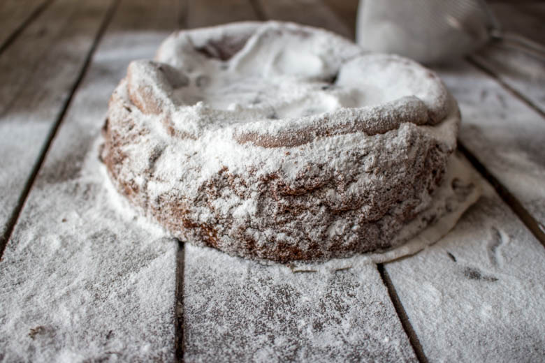
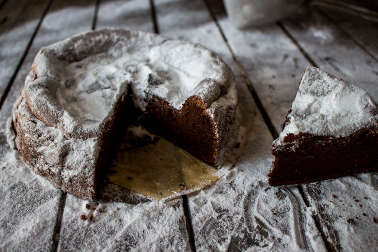
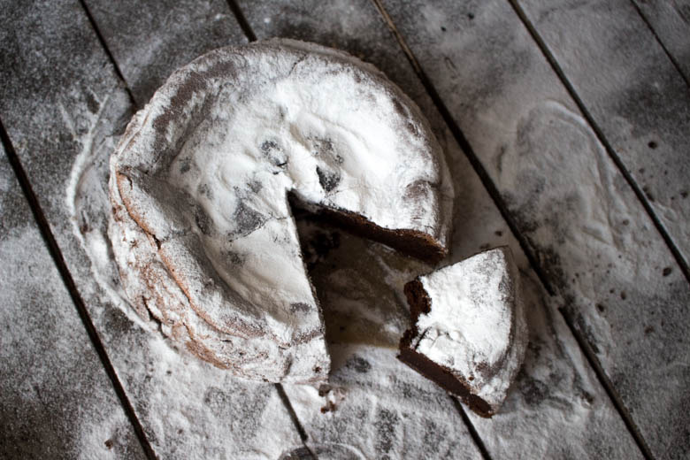

Gâteau au chocolat sans beurre

Ici vous trouverez la recette d’un gâteau au chocolat sans beurre et très très bon.
Aujourd’hui je vais vous parler de la solution que j’ai trouvé pour m’envoyer un gâteau au chocolat rien que pour moi sans avoir à le partager et sans avoir à culpabiliser!
Bon allez je vous avoue que j’exagère un peu (beaucoup) mais un jour c’est promis je la trouverai cette recette qui nous permettra de faire tout ça!!
Pour tout vous dire, depuis deux jours l’idée d’un bon gâteau au chocolat me trottait dans la tête et me poursuivait jusque dans mon sommeil. Un matin au réveil je n’ai donc pas résister et je me suis empressée de sortir les tablettes de chocolats de mes placards (à 5h du matin…)! Au départ je devais faire un gâteau au chocolat « normal » puis je me suis dit pourquoi ne pas tester une recette de gâteau au chocolat sans beurre (car apparemment les grandes personnes ont dit que le beurre ce n’était pas très très bon). Pour tout vous dire au début j’étais pas mal réticente car je ne savais pas trop à quelle texture m’attendre, si ça valait le coup ou pas… Bref je me suis dit que si Christopher Felder en parlait dans son livre « chocolat » c’est que ça devait tout de même être pas mal!
Alors me voila de bon matin dans ma cuisine à mettre pleins d’ingrédients dans un récipient sauf du beurre et pas de levure non plus! L’essentiel était qu’il y ait du chocolat!!! Ça faisait deux jours déjà que j’attendais ce moment là!
Dans son livre, Christopher Felder utilise un moule bien plus grand que le mien mais j’ai fait le choix d’utiliser un moule de 18cm de diamètre pour avoir un gâteau plus haut, plus « chaleureux » selon moi donnant l’impression de plus de gourmandises.
Alors c’est parti pour la recette de mon gâteau au chocolat sans beurre et je vous donnerai le verdict une fois la recette terminée !
Ingrédients
- Chocolat noir - 125g
- Farine - 1 càs
- Crème liquide - 100 ml
- Amande en poudre - 50 gr
- Extrait de vanille - 1 càc
- Oeufs - 4
- Lait - 2 càs
- Sucre - 125g
Instructions
- Préchauffer le four à 180°
- Dans une casserole à feu doux, faire fondre le chocolat avec le lait et la crème
- Séparer les blancs des jaunes
- Hors du feu ajouter les jaunes dans la casserole contenant le chocolat fondu
- Ajouter la farine et la poudre d'amande tamisée
- Monter les blancs en neige Quand les blanc commencent à monter et à faire de la mousse ajouter le sucre petit à petit (en 3 ou 4 fois)
- Incorporer délicatement les blancs en neige au chocolat à l'aide d'une cuillère en bois
- Découper du papier sulfurisé et déposer le autour et au fond du moule sinon beurrer et fariner le
- Enfourner 20-25 à 180° et laisser le gâteau refroidir avant de le saupoudrer de sucre glace



Les tips de la communauté
Gâteau très apprécié pour sa légèreté sans beurre et sa texture mousseux. Les lecteurs sont enthousiastes et confirment que c'est délicieux et facile à réaliser. Plusieurs retours positifs sur le goût optimal et la démoulage.
Astuces
- L'absence de beurre rend le gâteau plus léger et moins culpabilisant
- Peut utiliser de la crème allégée pour réduire davantage les calories
- Adapter le type de crème selon les préférences diététiques (crème de soja pour allergies)
- Le sucre glace crée un effet enneigé optionnel mais apprécié
- Utiliser un moule plastique peut rendre le démoulage plus difficile
Variantes suggérées
- Utiliser de la crème de soja pour adaptation allergie lactose
- Réduire la crème liquide pour diminuer les calories
Ajustements signalés
- Le moule en silicone peut rendre le démoulage difficile - bien beurrer ou utiliser un moule classique
- Ne pas ajouter trop de beurre malgré le nom - la recette fonctionne sans